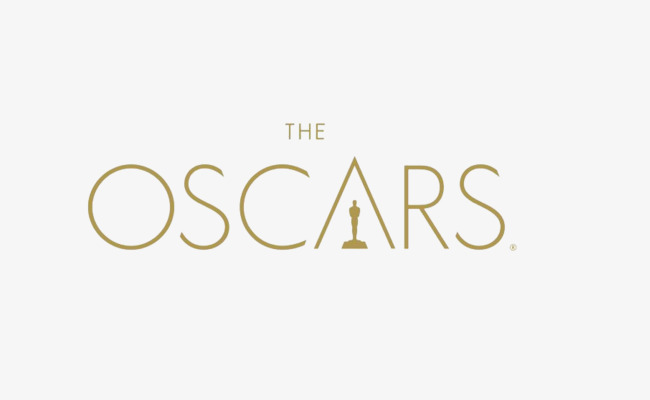

| Фільм | К-сть номінацій |
|---|---|
| «Рома», «Фаворитка» | 10 |
| «Влада», «Народження зірки» | 8 |
| «Чорна Пантера» | 7 |
| «Чорний куклукскланівець» | 6 |
| «Богемна рапсодія», «Зелена книга» | 5 |
| «Мері Поппінс повертається», «Перша людина» | 4 |
| «Балада Бастера Скраггса», «Холодна війна», «Чи зможете Ви мене пробачити?», «Якби Білл-стріт могла говорити» | 3 |
| «Марія — королева Шотландії», «Острів собак», «Робота без авторства», «Рут Бадер Гінзбург» | 2 |
Запрошуємо Вас пройти невеличке опитування на тему кіно, для цього натисніть туточки